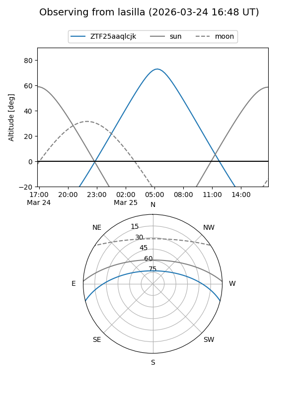
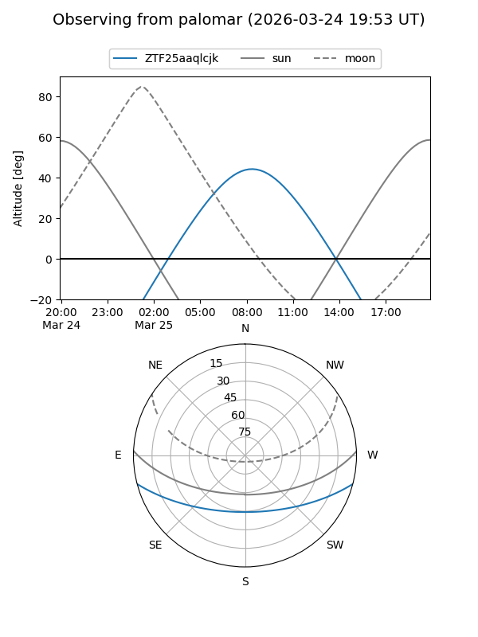

ZTF25aaqlcjk
Target ZTF25aaqlcjk at 2026-03-25 09:28
Aliases and brokers:
FINK: link
Lasair: link
ALeRCE: link
alt names
ZTF25aaqlcjk (ztf,fink_ztf)
Coordinates:
equatorial (ra, dec) = 190.8864,-12.20293
equatorial (HMS+DMS) = 12:43:32.74,-12:12:10.53
galactic (l, b) = (299.8914,+50.62222)
Flags:
Photometry:
last ztfg=17.39, ztfr=15.36
1 ztfg, 1 ztfr detections
Lightcurve
Visibility


Additional plots